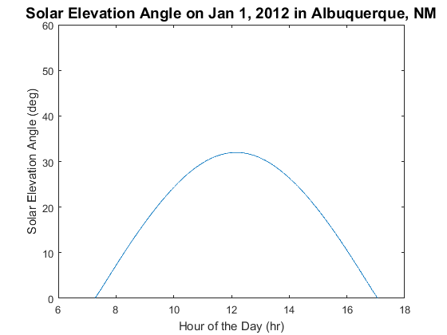

pvl_ephemeris
Calculates the position of the sun given time, location, and optionally pressure and temperature
Contents
Syntax
[SunAz, SunEl, ApparentSunEl, SolarTime] = pvl_ephemeris(Time, Location)
[SunAz, SunEl, ApparentSunEl, SolarTime] = pvl_ephemeris(Time, Location, Pressure)
[SunAz, SunEl, ApparentSunEl, SolarTime] = pvl_ephemeris(Time, Location, Pressure, Temperature)
[SunAz, SunEl, ApparentSunEl, SolarTime] = pvl_ephemeris(Time, Location, 'temperature', Temperature)
Description
[SunAz, SunEl, ApparentSunEl, SolarTime] = pvl_ephemeris(Time, Location) : Uses the given Time and Location structs to compute sun positions with atmospheric pressure assumed to be 1 atm (101325 Pa) and the temperature assumed to be 12 C.
[SunAz, SunEl, ApparentSunEl, SolarTime] = pvl_ephemeris(Time, Location, Pressure): Uses the given Time and Location structs with the given Pressure to determine sun positions. The temperature is assumed to be 12C. Pressure must be given in Pascals (1atm = 101325 Pa). Pressure may be estimated from altitude using pvl_alt2pres.
[SunAz, SunEl, ApparentSunEl, SolarTime] = pvl_ephemeris(Time, Location, Pressure, Temperature) : Uses the given Time and Location structs with the given Pressure and Temperature to determine sun positions. Pressure must be given in Pascals, and temperature must be given in C.
[SunAz, SunEl, ApparentSunEl, SolarTime] = pvl_ephemeris(Time, Location, 'temperature', Temperature) : Uses the given Time and Location structs with the given Temperature (in C) to determine sun positions. Default pressure is 101325 Pa.
Inputs
Time is a struct with the following elements, note that all elements can be column vectors, but they must all be the same length:
- Time.year - The year in the gregorian calendar.
- Time.month - the month of the year (January = 1 to December = 12).
- Time.day - the day of the month.
- Time.hour - the hour of the day.
- Time.minute - the minute of the hour.
- Time.second - the second of the minute.
- Time.UTCOffset - the UTC offset code, using the convention that a positive UTC offset is for time zones east of the prime meridian (e.g. EST = -5).
Location is a struct with the following elements:
- Location.latitude - vector or scalar latitude in decimal degrees (positive is northern hemisphere).
- Location.longitude - vector or scalar longitude in decimal degrees (positive is east of prime meridian).
- Location.altitude - an optional component of the Location struct, not used in the ephemeris code directly, but it may be used to calculate standard site pressure (see pvl_alt2pres function).
Outputs
- SunAz - Azimuth of the sun in decimal degrees from North. 0 = North to 270 = West.
- SunEl - Actual elevation (not accounting for refraction)of the sun in decimal degrees, 0 = on horizon. The complement of the True Zenith Angle.
- ApparentSunEl - Apparent sun elevation accounting for atmospheric refraction. This is the complement of the Apparent Zenith Angle.
- SolarTime - solar time in decimal hours (solar noon is 12.00).
Example
Plot aparent sun elevation angle for Albuquerque for Jan 1, 2012 This example uses the function pvl_maketimestruc
Location.latitude = 35.04; Location.longitude = -106.62; Location.altitude = 1619; % Create 1-min time series for Jan 1, 2012 DN = datenum(2012, 1,1):1/(24*60):datenum(2012, 1, 1, 23, 59, 59); Time = pvl_maketimestruct(DN, -7); % [SunAz, SunEl, ApparentSunEl, SolarTime]=pvl_ephemeris(Time, Location); dHr = Time.hour+Time.minute./60+Time.second./3600; % Calculate decimal hours for plotting figure plot(dHr,ApparentSunEl) ylim([0 60]) title('Solar Elevation Angle on Jan 1, 2012 in Albuquerque, NM','FontSize',14) xlabel('Hour of the Day (hr)') ylabel('Solar Elevation Angle (deg)')
References
[1] Grover Hughes, Engineering Astronomy, Sandia National Laboratories, February 1985.
See Also
pvl_maketimestruct , pvl_makelocationstruct, pvl_alt2pres, pvl_getaoi
Copyright 2014 Sandia National Laboratories